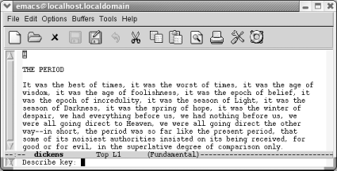
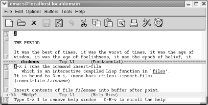

{% include JB/setup %}
{% raw %}
<div>
<div class="book" xml:lang="en"><div class="book"><div class="book"><div class="book"><h1 class="title"><a id="gnu3-CHP-1-SECT-10" class="calibre1"></a>Getting Help</h1></div></div></div><p class="copyright">Emacs has extensive <a id="gnu3-CHP-1-ITERM-1624" class="calibre2"></a>online help, which is discussed further in
<a class="calibre2" href="ch14.html" title="Chapter 14. The Help System">Chapter 14</a>. You can enter help through the
lifesaver icon on the toolbar or through the Help menu. Either method
will show you a help menu, <a id="gnu3-CHP-1-ITERM-1625" class="calibre2"></a>
            <a id="gnu3-CHP-1-ITERM-1626" class="calibre2"></a>described
later in this section. To enter help using the keyboard, press
<span><strong class="calibre5">C-h</strong></span>. Pressing <span><strong class="calibre5">C-h ?</strong></span> gives you a list of options. Pressing
<span><strong class="calibre5">C-h t</strong></span> starts a tutorial that is an
excellent introduction to Emacs.</p><p class="copyright">To get information about the meaning of a keystroke combination,
press <span><strong class="calibre5">C-h k</strong></span> for <span><strong class="calibre5">describe-key</strong></span>. For example, if you type
<span><strong class="calibre5">C-h k C-x i</strong></span>, Emacs displays a
description of the <span><strong class="calibre5">insert-file</strong></span>
command, which is bound to <span><strong class="calibre5">C-x i</strong></span>.
Pressing <span><strong class="calibre5">C-h f</strong></span> (for <span><strong class="calibre5">describe-function</strong></span>) asks Emacs to describe a
function (really just a command name, such as <span><strong class="calibre5">find-file</strong></span>). Essentially, <span><strong class="calibre5">C-h k</strong></span> and <span><strong class="calibre5">C-h
f</strong></span> give you the same information; the difference is that
with <span><strong class="calibre5">C-h k</strong></span>, you press a key whereas
with <span><strong class="calibre5">C-h f</strong></span>, you type a command name.</p><p class="copyright">Assume you want to find out about what <span><strong class="calibre5">C-x
i</strong></span> does.</p><div class="book"><a id="ch01-13-fm2xml" class="calibre2"></a><table class="calibre8"><colgroup class="calibre9"><col class="calibre10"/></colgroup><tbody class="calibre15"><tr class="calibre12"><td class="calibre17">
                        <p class="copyright">Type: <span><strong class="calibre5">C-h k</strong></span>
                        </p>
                     </td></tr><tr class="calibre12"><td class="calibre17">
                        <p class="copyright">
                           </p><div class="book"><div class="mediaobject"><a id="I_1_tt27" class="calibre2"></a></div></div><p class="copyright">
                        </p>
                     </td></tr><tr class="calibre12"><td class="calibre19">
                        <p class="copyright">Asking for help about a keyboard command.</p>
                     </td></tr></tbody></table></div><div class="book"><a id="ch01-14-fm2xml" class="calibre2"></a><table class="calibre8"><colgroup class="calibre9"><col class="calibre10"/></colgroup><tbody class="calibre15"><tr class="calibre12"><td class="calibre17">
                        <p class="copyright">Type: <span><strong class="calibre5">C-x i</strong></span>
                        </p>
                     </td></tr><tr class="calibre12"><td class="calibre17">
                        <p class="copyright">
                           </p><div class="book"><div class="mediaobject"><a id="I_1_tt28" class="calibre2"></a></div></div><p class="copyright">
                        </p>
                     </td></tr><tr class="calibre12"><td class="calibre19">
                        <p class="copyright">Emacs splits the screen to display help.</p>
                     </td></tr></tbody></table></div><p class="copyright">A few things to notice: the window
<a id="gnu3-CHP-1-ITERM-1627" class="calibre2"></a>
            <a id="gnu3-CHP-1-ITERM-1628" class="calibre2"></a>
            <a id="gnu3-CHP-1-ITERM-1629" class="calibre2"></a>
            <a id="gnu3-CHP-1-ITERM-1630" class="calibre2"></a>is
now split into two parts because you're looking at
two separate buffers. Each buffer has its own mode line. The lower
buffer is the <code class="calibre21">*Help*</code> buffer; it contains the
information about the <span><strong class="calibre5">insert-file</strong></span>
command. Emacs keeps the cursor in the <code class="calibre21">dickens</code>
buffer because there's no good reason for you to
edit the <code class="calibre21">*Help*</code> buffer.</p><p class="copyright">You might also notice that in
<a id="gnu3-CHP-1-ITERM-1631" class="calibre2"></a>
            <a id="gnu3-CHP-1-ITERM-1632" class="calibre2"></a>the
text describing this command, Emacs calls the cursor
<span><em class="calibre7">point</em></span>. This term is used throughout Emacs to
refer to the cursor; you're bound to encounter it.</p><p class="copyright">To make the <code class="calibre21">*Help*</code> buffer disappear, press
<span><strong class="calibre5">C-x 1</strong></span> (we cover this command in
<a class="calibre2" href="ch04.html" title="Chapter 4. Using Buffers, Windows, and Frames">Chapter 4</a>).</p><div class="book" xml:lang="en"><div class="book"><div class="book"><div class="book"><h2 class="title1"><a id="gnu3-CHP-1-SECT-10.1" class="calibre1"></a>The Help Menu</h2></div></div></div><p class="copyright">You can also use the Help menu to access help
<a id="gnu3-CHP-1-ITERM-1633" class="calibre2"></a>
               <a id="gnu3-CHP-1-ITERM-1634" class="calibre2"></a>commands quickly, and you can get there
either through the menu or through the lifesaver on the toolbar. On
this menu, you find options we've discussed here:
Emacs Tutorial, Describe<span>→</span> Describe Key, and
Describe<span>→</span> Describe Function. It includes a host of
interesting options, including access to the Emacs frequently asked
questions (FAQ) file, a new search feature, and even an Emacs
psychiatrist (you might tell it something like
"Emacs is driving me over the edge
today"). There's an interface to
Info, Emacs's online documentation. Simply choose
Read the Emacs Manual to start Info.</p><p class="copyright">In this section, we've given a very brief
introduction to a few of the paths you can take in the help system.
There are many more help facilities; they are described thoroughly in
<a class="calibre2" href="ch14.html" title="Chapter 14. The Help System">Chapter 14</a>. The help features
we've described here should be enough to get you
started; if you want to learn more, jump ahead to <a class="calibre2" href="ch14.html" title="Chapter 14. The Help System">Chapter 14</a>.</p></div></div></div>

{% endraw %}

